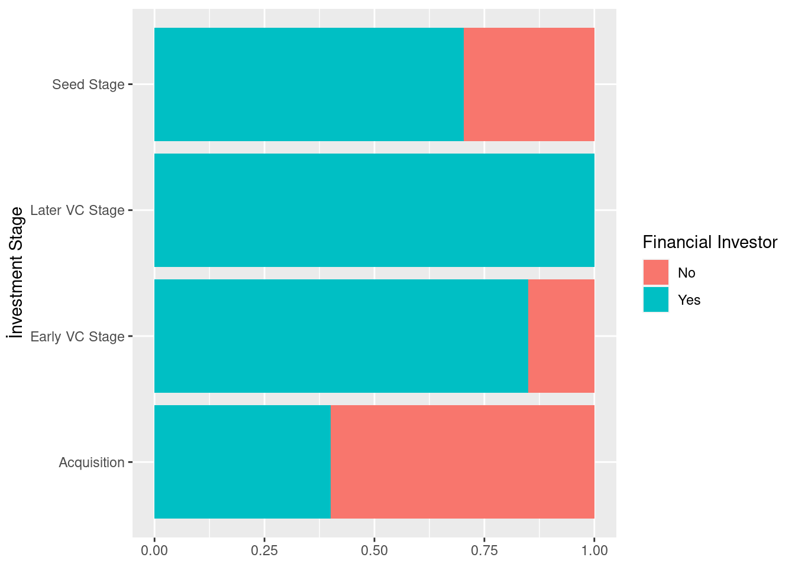
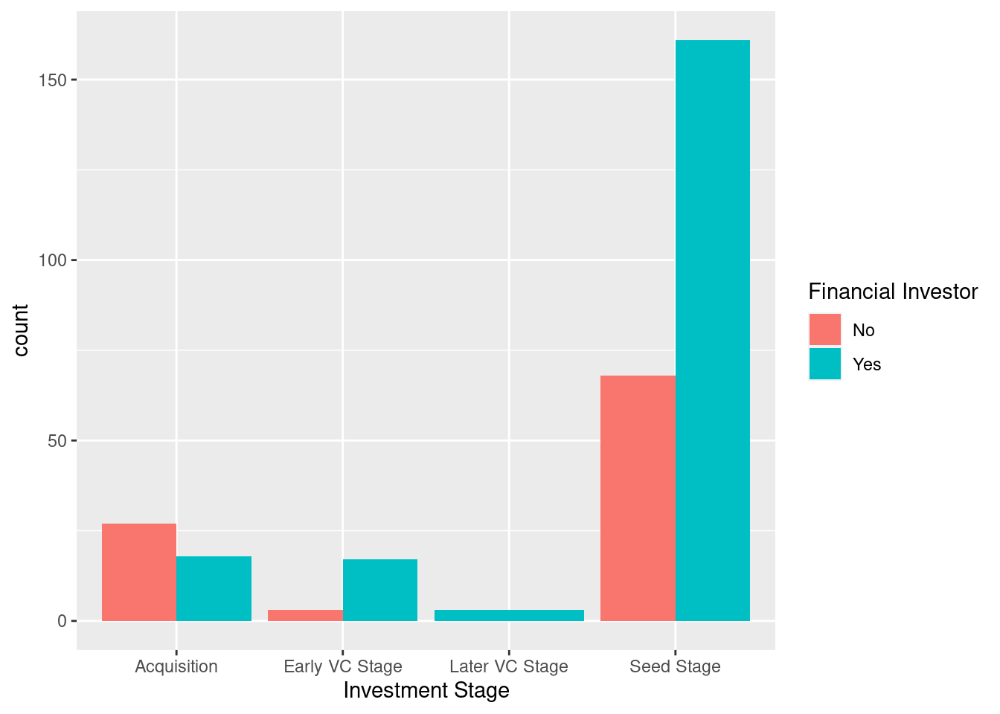

# Required libraries
library(dplyr)
library(tidyverse)
library(scales)
library(ggplot2)
library(readxl)1 Startup Deals
This report summarizes some of the analyzes startups getting investments from a variety of domestic and international investors. For more information visit KPMG and 212’s Turkish Startup Investment Review 2021 report.
Data Preparation
url <- "https://github.com/berkorbay/datasets/raw/master/startup_deals/startup_deals_2021.xlsx"
destfile <- "sd21.xlsx"
curl::curl_download(url, destfile)
sd21 <- read_excel(destfile)
sd21 <- sd21 %>% mutate(`Deal Value (USD)` = as.numeric(`Deal Value (USD)`))
sd21$`Stake (%)`<- str_remove(sd21$`Stake (%)`, pattern = "%")
sd21 <- sd21 %>% mutate(`Stake (%)` = as.numeric(`Stake (%)`))Key Takeaways
- The e-commerce and delivery sectors received the most investment by far. But we noticed something that most of these investments were made in only 2 companies, Trendyol with 1.435.000.000 and Getir with 1.018.000.000.
- It is seen that the most investments are made from the USA in terms of total USD value. Count of investors from Turkey is about 90% according to total count.
- Trendyol, Getir, Hepsiburada, Dream Games are the top 4 companies that collect the most investment. (86% of total investment)
- Gaming sector is quite popular compared to other sectors according to all investment stages.Although it may not receive the most investment in terms of total value, the sector that receives the most investment in terms of numbers is the gaming sector. The fact that this sector receives the most investment especially in the seed stage may be an indication that this sector will grow in the short-medium term.
Distribution of investments by sectors
sd21 %>%group_by(`Sector`)%>%
summarize(sum =sum(`Deal Value (USD)`)) %>%
arrange(desc(sum))# A tibble: 45 × 2
Sector sum
<chr> <dbl>
1 Ecommerce enabler 2218940063
2 Delivery & Logistics 1027811561
3 Media 21759000
4 Energy 21608314
5 Deeptech 16457491
6 Telecom 12250000
7 Agritech 11618700
8 Education 10933845
9 Artificial intelligence 6477366
10 Marketingtech 5090000
# … with 35 more rowsGetir is the only company that have Later VC Stage
sd21 %>%filter(`Investment Stage` == "Later VC Stage") %>% group_by(`Target Company`)%>%
summarize(count=n()) %>%
arrange(desc(count))# A tibble: 1 × 2
`Target Company` count
<chr> <int>
1 Getir 3Trendyol, Getir, Hepsiburada, Dream Games are the top 4 companies that collect the most investment. (86% of total investment)
sd21 %>% group_by(`Target Company`)%>%
summarize(sum=sum(`Deal Value (USD)`,na.rm = TRUE) ) %>%
arrange(desc(sum)) %>%
top_n(4)# A tibble: 4 × 2
`Target Company` sum
<chr> <dbl>
1 trendyol 1435000000
2 Getir 1018000000
3 hepsiburada 761481000
4 Dream Games 155000050Which countries the investors invested from and how much they invested?
sd21 %>%group_by(`Investor's Origin`)%>%
summarize(sum =sum(`Deal Value (USD)`),count=n()) %>%
arrange(desc(sum))# A tibble: 38 × 3
`Investor's Origin` sum count
<chr> <dbl> <int>
1 "USA, Qatar, UAE, \r\nJapan" 1435000000 1
2 "USA" 1076423346 11
3 "USA, UAE" 555000000 1
4 "USA, UK" 167000000 2
5 "USA, Brazil, Turkey" 128000000 1
6 "UK" 52307000 6
7 "NA" 35000000 1
8 "France" 32000000 2
9 "Turkey, Belgium, USA" 20000000 1
10 "Finland" 10000000 1
# … with 28 more rowssd21 %>%group_by(`Investor's Origin`)%>%
summarize(sum =sum(`Deal Value (USD)`,na.rm = TRUE),count=n(),average=sum/count) %>%
arrange(desc(count))# A tibble: 38 × 4
`Investor's Origin` sum count average
<chr> <dbl> <int> <dbl>
1 Turkey 210986754. 235 897816.
2 USA 1076423346 11 97856668.
3 UK 52307000 6 8717833.
4 France 32000000 2 16000000
5 Germany 5100000 2 2550000
6 India 3050000 2 1525000
7 Netherlands 5800000 2 2900000
8 Qatar, Turkey 1140000 2 570000
9 Turkey, Estonia 830000 2 415000
10 Turkey, USA 725000 2 362500
# … with 28 more rowsHow many investment received by each sector according to the stages?
SeedStage <- sd21 %>%filter(`Investment Stage` == "Seed Stage") %>% group_by(`Sector`)%>%
summarize(count=n()) %>%
arrange(desc(count))
EarlyVC <- sd21 %>%filter(`Investment Stage` == "Early VC Stage") %>% group_by(`Sector`)%>%
summarize(count=n()) %>%
arrange(desc(count))
LaterVC <- sd21 %>%filter(`Investment Stage` == "Later VC Stage") %>% group_by(`Sector`)%>%
summarize(count=n()) %>%
arrange(desc(count))
Acquisition <- sd21 %>%filter(`Investment Stage` == "Acquisition") %>% group_by(`Sector`)%>%
summarize(count=n()) %>%
arrange(desc(count))
all <- sd21 %>% group_by(`Sector`)%>%
summarize(count=n()) %>%
arrange(desc(count))
allc <- all %>% left_join(SeedStage, by = "Sector") %>% left_join(EarlyVC, by = "Sector") %>% left_join(LaterVC, by = "Sector") %>% left_join(Acquisition, by = "Sector")
colnames(allc) <- c("Sector","All","Seed","Early","Later","Acquisition")
allc# A tibble: 45 × 6
Sector All Seed Early Later Acquisition
<chr> <int> <int> <int> <int> <int>
1 Gaming 51 44 2 NA 5
2 SaaS 28 17 1 NA 10
3 Fintech 23 16 3 NA 4
4 Marketplace 17 13 1 NA 3
5 Healthtech 14 12 1 NA 1
6 Delivery & Logistics 13 8 1 3 1
7 Media 12 9 NA NA 3
8 Artificial intelligence 11 11 NA NA NA
9 Deeptech 11 10 1 NA NA
10 Foodtech 9 6 2 NA 1
# … with 35 more rowsHow many investment is received by each origin according to the stages?
InvestorsOriginSeedStage <- sd21 %>%filter(`Investment Stage` == "Seed Stage") %>% group_by(`Investor's Origin`)%>%
summarize(count=n()) %>%
arrange(desc(count))
InvestorsOriginEarlyVC <- sd21 %>%filter(`Investment Stage` == "Early VC Stage") %>% group_by(`Investor's Origin`)%>%
summarize(count=n()) %>%
arrange(desc(count))
InvestorsOriginLaterVC <- sd21 %>%filter(`Investment Stage` == "Later VC Stage") %>% group_by(`Investor's Origin`)%>%
summarize(count=n()) %>%
arrange(desc(count))
InvestorsOriginAcquisition <- sd21 %>%filter(`Investment Stage` == "Acquisition") %>% group_by(`Investor's Origin`)%>%
summarize(count=n()) %>%
arrange(desc(count))
InvestorsOriginall <- sd21 %>% group_by(`Investor's Origin`)%>%
summarize(count=n()) %>%
arrange(desc(count))
InvestorsOriginallc <- InvestorsOriginall %>% left_join(InvestorsOriginSeedStage, by = "Investor's Origin") %>% left_join(InvestorsOriginEarlyVC, by = "Investor's Origin") %>% left_join(InvestorsOriginLaterVC, by = "Investor's Origin") %>% left_join(InvestorsOriginAcquisition, by = "Investor's Origin")
colnames(InvestorsOriginallc) <- c("Investor's Origin","All","Seed","Early","Later","Acquisition")
InvestorsOriginallc# A tibble: 38 × 6
`Investor's Origin` All Seed Early Later Acquisition
<chr> <int> <int> <int> <int> <int>
1 Turkey 235 198 8 NA 29
2 USA 11 7 1 1 2
3 UK 6 2 NA NA 4
4 France 2 NA NA NA 2
5 Germany 2 1 NA NA 1
6 India 2 NA 1 NA 1
7 Netherlands 2 1 NA NA 1
8 Qatar, Turkey 2 2 NA NA NA
9 Turkey, Estonia 2 2 NA NA NA
10 Turkey, USA 2 2 NA NA NA
# … with 28 more rowsWhat sector did American investors invest in?
sd21 %>%
filter(str_detect(`Investor's Origin`, "USA")) %>%
group_by(`Sector`) %>%
summarise(count = n()) %>%
arrange(desc(count))# A tibble: 14 × 2
Sector count
<chr> <int>
1 Gaming 5
2 Delivery & Logistics 3
3 Ecommerce enabler 3
4 Fintech 3
5 Foodtech 2
6 Agritech 1
7 B lockchain 1
8 Deeptech 1
9 Healthtech 1
10 Marketingtech 1
11 Marketplace 1
12 Media 1
13 SaaS 1
14 Telecom 1Percentage of investors during the investment phases
financial_investor <- sd21 %>%
group_by(`Investment Stage`) %>%
transmute(Percent = label_percent()(sum(`Financial Investor` == "Yes")/n()))
unique(financial_investor)# A tibble: 4 × 2
# Groups: Investment Stage [4]
`Investment Stage` Percent
<chr> <chr>
1 Seed Stage 70%
2 Early VC Stage 85%
3 Acquisition 40%
4 Later VC Stage 100% ggplot(sd21, aes(`Investment Stage`, fill = `Financial Investor`)) +
geom_bar(position = "fill") +
labs(x="İnvestment Stage", y=NULL) +
coord_flip()
ggplot(sd21, aes(`Investment Stage`, fill = `Financial Investor`)) +
# Add a bar layer
geom_bar(position = "dodge")